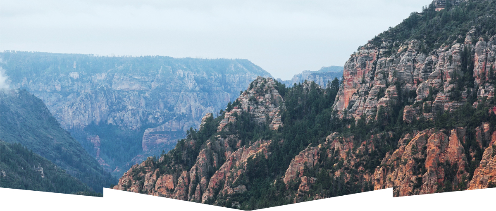

Седона - небольшой городок в Аризоне, заслуживающий большего!
Рассмотрим 5 причин, по которым Седона круче, чем Гранд Каньон!
Преимущества
-
Настоящий городок
Седона - не акттракцион для туристов, там течет своя жизнь

-
Жилье
Рекомендуем пожить в настоящем мотеле, как как в кино!
-
Еда
Всегда заказывайте фирменный бургер, вы не разочаруетесь!
-
Сувениры
Не только китайского, и местного производства!
-
-
Там есть мост дьявола
Да, по нему можно пройти! Если конечно вы осмелитесь

-
Небольшая площадь
Все достопримечательности находятся очень близко
-
Красивая дорога
Ехать в Седону из Лас-Вегаса совсем не скучно!
-
Мало туристов
Большиство едет в Гранд Каньон и толпится там
Заинтересовались?
Укажите предполагаемые даты поездки,
и мы покажем вам лучшие предложения гостиниц в Седоне
Поиск гостиницы в Седоне
Карта